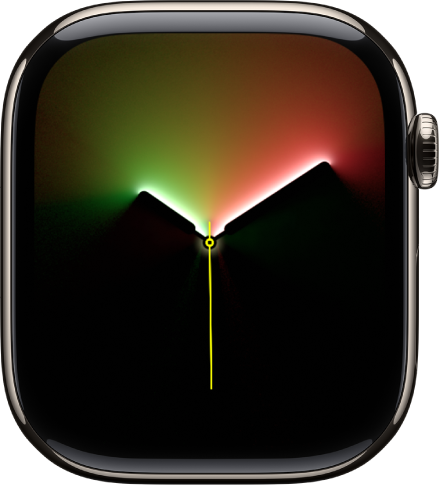

此表盘的灵感源自非洲未来主义，一种通过科学、技术和自我赋权来探讨非洲侨民境遇的哲学理念。
下方的文件数包括本地化资源。固件名称键能确认包的归属；组件的圆屏点击边界、亮屏过渡与 AOD 对照均待设备验证。
原始包 已解析属性表 Mach-O 方法与成员 ARM64 汇编 解出的图集 解出的纹理和场景
.strings × 88 .plist × 2 .car × 1 .art × 1 .metallib × 1 无扩展名 × 1
原始包 已解析属性表 Mach-O 方法与成员 ARM64 汇编 解出的图集 解出的纹理和场景
.strings × 88 .plist × 2 .car × 1 .art × 1 .metallib × 1 无扩展名 × 1
原始包 已解析属性表 Mach-O 方法与成员 ARM64 汇编 解出的图集 解出的纹理和场景
.strings × 88 .plist × 2 .car × 1 .art × 1 .metallib × 1 无扩展名 × 1
NTKColtanFaceBundle.bundleFACE_STYLE_COLTAN_DESCRIPTIONredgreengoldmonochromeEDIT_OPTION_LABEL_DENSITY_SIMPLEEDIT_OPTION_LABEL_DENSITY_DETAILEDEDIT_OPTION_LABEL_DENSITY色组与设备条件 Coltan.color.plist 共享色组与默认值
+[NTKColtanAnalogFace tritium_burnInFaceName];-[NTKColtanAnalogFaceView tritium_didTransitionToTritiumOn];-[NTKColtanAnalogFaceView tritium_didTransitionToTritiumOff];-[NTKColtanAnalogFaceView tritium_createFaceAnimator];-[NTKColtanAnalogFaceView tritium_animationToCurrentDateFromDate:];-[NTKColtanAnalogFaceView tritium_transitionToFrameSpecifier:];-[NTKColtanAnalogFaceView tritium_willTransitionToTritiumOnToFrameSpecifier:];-[NTKColtanAnalogFaceView tritium_willTransitionToTritiumOffFromFrameSpecifier:];-[NTKColtanColorPalette secondaryComplicationColor];-[NTKColtanColorPalette secondHandColor];-[NTKColtanColorPalette minuteHandInnerColor];-[NTKColtanColorPalette minuteHandOuterColor];-[NTKColtanColorPalette tickColoration];-[NTKColtanAnalogFaceView tritium_didTransitionToTritiumOn];-[NTKColtanAnalogFaceView tritium_didTransitionToTritiumOff];-[NTKColtanAnalogFaceView _applyTransitionFraction:fromOption:toOption:forCustomEditMode:slot:];-[NTKColtanAnalogFaceView tritium_createFaceAnimator];-[NTKColtanAnalogFaceView tritium_animationToCurrentDateFromDate:];-[NTKColtanAnalogFaceView tritium_transitionToFrameSpecifier:];-[NTKColtanAnalogFaceView screenWillTurnOnAnimated:];-[NTKColtanAnalogFaceView _configureForTransitionFraction:fromEditMode:toEditMode:];-[NTKColtanAnalogFaceView setOverrideDate:duration:];-[NTKColtanAnalogFaceView tritium_willTransitionToTritiumOnToFrameSpecifier:];-[NTKColtanAnalogFaceView screenDidTurnOffAnimated:];-[NTKColtanAnalogFaceView tritium_willTransitionToTritiumOffFromFrameSpecifier:];-[NTKColtanAnalogFaceView _applyComplicationAlphaTransitionFraction:fromAlpha:toAlpha:];-[NTKColtanAnalogFaceView _applyTransitionFraction:fromDensity:toDensity:];-[NTKColtanAnalogFaceView _applyTransitionFraction:fromShape:toShape:];-[NTKColtanAnalogFaceView _setTickOpacity:];-[NTKColtanAnalogFaceView _setupCircularMaskForShapeTransitionWithFraction:];-[NTKColtanAnalogFaceView _tickOpacityForDensity:];-[NTKColtanColorPalette tickColoration];-[NTKColtanDisplayQuad setOverrideDate:duration:];-[NTKColtanDisplayQuad secondHandColor];-[NTKColtanDisplayQuad setOverrideDate:hourRadians:minuteRadians:secondRadians:];-[NTKColtanDisplayQuad setTickOpacity:];-[NTKColtanDisplayQuad minuteHandInnerColor];-[NTKColtanDisplayQuad minuteHandOuterColor];-[NTKColtanDisplayQuad tickColoration];-[NTKColtanDisplayQuad tickOpacity];-[NTKColtanRenderer setMinuteAngle:];-[NTKColtanRenderer setSecondAngle:];-[NTKColtanRenderer minuteAngle];-[NTKColtanRenderer secondAngle];-[NTKColtanColorPalette secondaryComplicationColor];-[NTKColtanColorPalette primaryComplicationColor];-[NTKColtanColorPalette secondHandColor];-[NTKColtanColorPalette centerGlowColor];-[NTKColtanColorPalette hourHandInnerColor];-[NTKColtanColorPalette hourHandOuterColor];-[NTKColtanColorPalette minuteHandInnerColor];-[NTKColtanColorPalette minuteHandOuterColor];-[NTKColtanColorPalette tickColoration];+[NTKColtanAnalogFace _initialDefaultComplicationForSlot:forDevice:];+[NTKColtanAnalogFace _complicationSlotDescriptors];+[NTKColtanAnalogFace _richComplicationSlotsForDevice:];+[NTKColtanAnalogFace _orderedComplicationSlots];+[NTKColtanAnalogFace _defaultSelectedComplicationSlotForDevice:];-[NTKColtanAnalogFace editOptionThatHidesAllComplications];-[NTKColtanAnalogFace _numberOfOptionsForCustomEditMode:slot:];-[NTKColtanAnalogFace _defaultOptionForCustomEditMode:slot:];-[NTKColtanAnalogFace _indexOfOption:forCustomEditMode:slot:];-[NTKColtanAnalogFace _optionAtIndex:forCustomEditMode:slot:];-[NTKColtanAnalogFaceView complicationFactory];-[NTKColtanAnalogFaceView _complicationAlphaForEditMode:];-[NTKColtanAnalogFaceView createFaceColorPalette];-[NTKColtanAnalogFaceView _legacyLayoutOverrideforComplicationType:slot:];-[NTKColtanAnalogFaceView _applyTransitionFraction:fromOption:toOption:forCustomEditMode:slot:];-[NTKColtanAnalogFaceView _applyBreathingFraction:forCustomEditMode:slot:];-[NTKColtanAnalogFaceView _applyOption:forCustomEditMode:slot:];-[NTKColtanAnalogFaceView _prepareForEditing];-[NTKColtanAnalogFaceView _cleanupAfterEditing];-[NTKColtanAnalogFaceView _keylineViewForComplicationSlot:];-[NTKColtanAnalogFaceView _keylineStyleForComplicationSlot:];-[NTKColtanAnalogFaceView _configureComplicationView:forSlot:];-[NTKColtanAnalogFaceView _loadLayoutRules];-[NTKColtanAnalogFaceView _newLegacyViewForComplication:family:slot:];-[NTKColtanAnalogFaceView palette];-[NTKColtanAnalogFaceView layoutConfigurationForSlot:];-[NTKColtanAnalogFaceView _homeScreenAccentColor];-[NTKColtanAnalogFaceView _applyComplicationAlphaTransitionFraction:fromAlpha:toAlpha:];-[NTKColtanAnalogFaceView updateColorsWithPalette:];-[NTKColtanColorPalette swatchImageForSize:];-[NTKColtanColorPalette swatch];-[NTKColtanColorPalette isRedGreenGold];-[NTKColtanColorPalette tickColoration];-[NTKColtanDisplayQuad setPalette:];-[NTKColtanDisplayQuad secondHandColor];-[NTKColtanDisplayQuad centerGlowColor];-[NTKColtanDisplayQuad hourHandInnerColor];-[NTKColtanDisplayQuad hourHandOuterColor];-[NTKColtanDisplayQuad minuteHandInnerColor];-[NTKColtanDisplayQuad minuteHandOuterColor];-[NTKColtanDisplayQuad tickColoration];